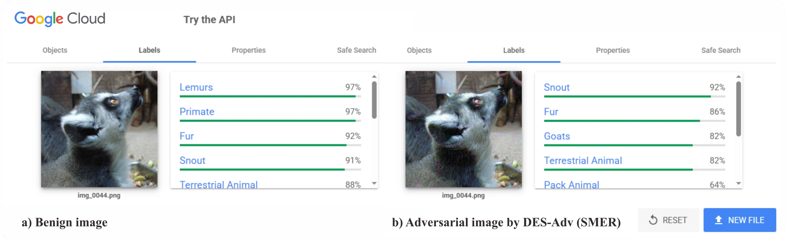
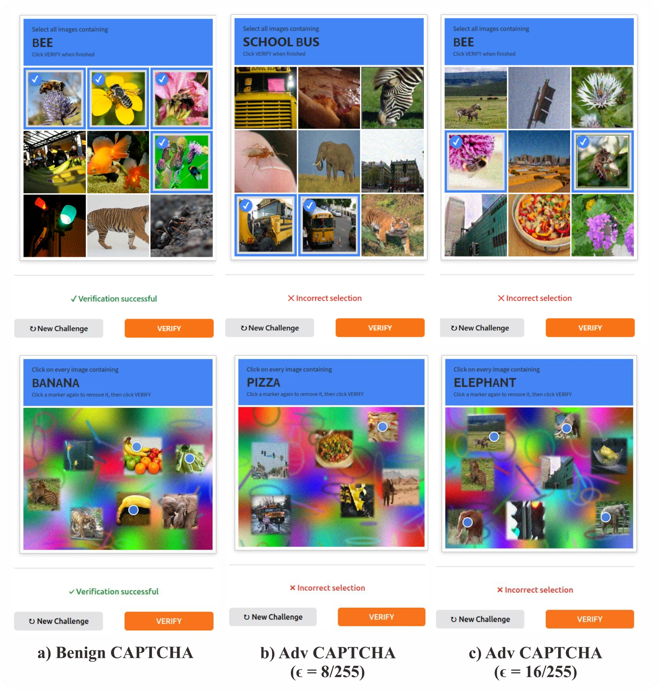
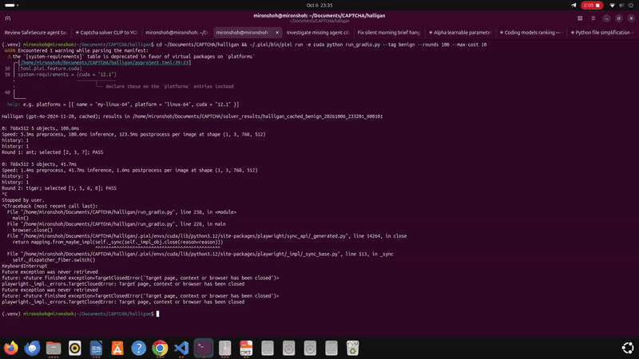
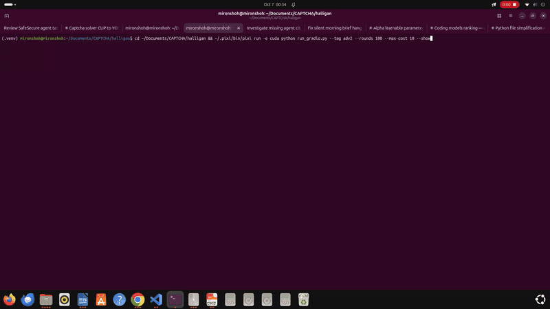

Find the neighborhood
Embed the input and retrieve similar examples from a held-out selection set. DINO representations and FAISS define a local region of competence.
DYNAMIC ENSEMBLE SELECTION · ADVERSARIAL TRANSFER
Rethinking Query-Free Attacks
on Web Vision Services
An input-adaptive approach to selecting surrogate ensembles.
A fixed set of surrogate models can overlook what makes each image different.
Transfer-based adversarial attacks use accessible surrogate models to craft images that transfer to an unseen target. Many ensemble approaches keep the same participating models for every input, even when their usefulness varies locally.
DES-Adv adapts the ensemble to the image. It combines representation-space neighborhoods with local competence, gradient similarity, and gradient sensitivity to input noise. The selected subset then works with an existing attack optimizer, without target feedback during construction.
Largest reported gain in average attack success rate
All fixed four-model combinations evaluated from a six-model pool
ImageNet, CIFAR-10, and CIFAR-100
Results are specific to the evaluated configurations. The +17.64 percentage-point gain is for PGD + SVRE on ImageNet, relative to the strongest predefined fixed ensemble.
Selection happens on the surrogate side. The unseen target is queried only for evaluation.
Embed the input and retrieve similar examples from a held-out selection set. DINO representations and FAISS define a local region of competence.
Rank candidate models using local predictive competence, gradient similarity, and sensitivity to small input perturbations.
Use the image-specific subset with an existing ensemble attack: Ensemble Attack, SVRE, AdaEA, or SMER.
The paper evaluates transfer across heterogeneous unseen architectures, external recognition services, hosted models, and multimodal systems.
| Service / model | SMER | SMER + DES-Adv | Gain |
|---|---|---|---|
| AWS Rekognition | 62.61 | 73.11 | +10.50 pp |
| Google Cloud Vision | 51.14 | 62.28 | +11.14 pp |
| HF ConvNeXt-B (Meta) | 38.40 | 44.10 | +5.70 pp |
| Imagga | 76.84 | 80.67 | +3.83 pp |
Source: paper, Table 4. Each service is evaluated on 1,000 paired images. Conditional ASR uses only benign-correct samples under the paper’s label-matching protocol; eligible sample counts differ by service. Optional refinements are disabled.

The paper also studies image-based challenges across 500 sessions per setting. For the CLIP ViT-B/32 grid solver, the solving rate falls from 92.2% on benign challenges to 28.8% at ε = 16/255. This evaluates automated solvers on constructed challenges, without claiming compromise of a production CAPTCHA provider.

The first minute of each recording, played at 2× speed as a 30-second loop. Select a recording to enlarge it.


Visit the DES-Adv repository
on GitHub.